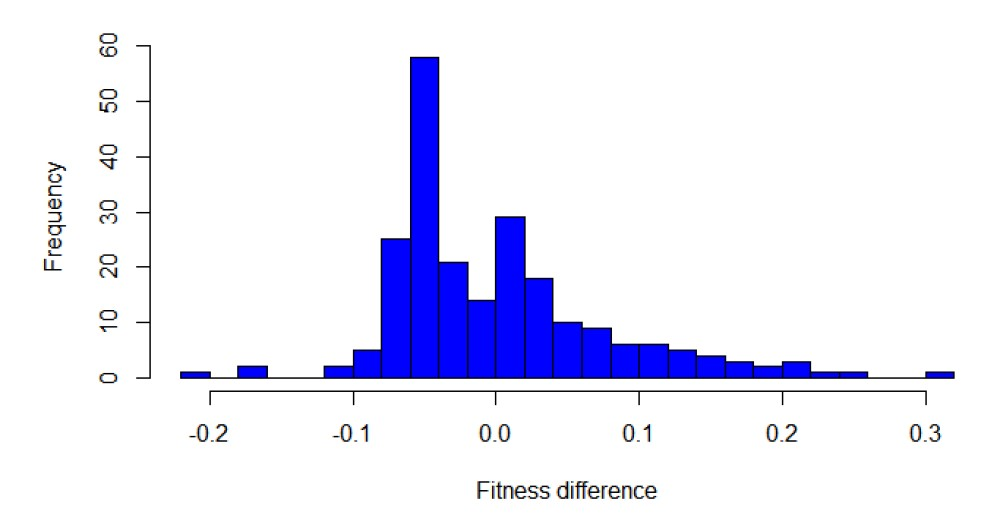
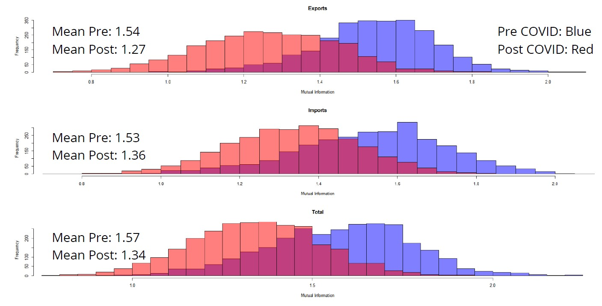

Welcome to the World Trade Graph Project

Project 3: World Trade as a Graph
This project was carried out as part of the Data Driven Modeling of Complex Systems course taught by Professor Walter Quattrociocchi at the University of Rome La Sapienza. The aim of the research is to explore the potential of representing a complex phenomenon as the world trade, the driving force of our economies, through the statistical methodologies provided by complex systems theory. Can such a robust institution be permanently affected by external events? Does it adapt to these influences? These questions will be examined in the subsequent sections of this research.

The Data
The data that have been used are taken online and are available to the public, the sources are: the CEPII Database and the World Trade Organisation.
1. CEPII Database (2017 - 2022)
The first dataset, sourced from the CEPII Database, takes the years from 2017 to 2022 and provides detailed insights into bilateral trade relationships—detailing exporters, importers, and the corresponding trade values. Here is an example:

2. World Trade Organisation Data (2017 - 2024)
Complementing the previous dataset, the World Trade Organisation (WTO) dataset provides a macro-level perspective on global trade. It consists of three smaller datasets, each focusing on a specific aspect: imports, exports, and overall trade activity, calculated as the average of imports and exports (imports+exports)/2. These datasets cover the years from 2017 to 2024 and include three key columns: the country, the total trade value (for imports, exports, or activity) in a given month, and the corresponding month when the trade transaction took place.

Graph features
The analyzed graph exhibits a dense and highly interconnected structure. Let's describe the graph, referred to the year 2017 of the CEPII dataset, after grouping for the goods that have been trade in order to have only 1 bilateral relationships that sums all the values traded, the graphs for the other years present similar features. The graph has 226 nodes and 26,332 arcs, the network reaches a density of 0.5178, meaning that over half of all possible connections exist. France emerges as the most influential node, with a maximum degree of 447, highlighting its central role in the network, while Bonaire Island represents the opposite end of the spectrum with a minimum degree of 41. On average, each node connects with 233 others, reflecting a robust level of interconnectivity. These metrics collectively illustrate a complex system where key nodes significantly shape the overall connectivity and dynamics of the network.
World trade graph representation
It was a challenge to represent a graph with 26.000 arcs, then a solution that has been implemented is to represent direct arcs from a Country A to a Country B if Country A is the biggest seller, the country that has exported the most, to Country B. Also the arcs are coloured according to the continent of origin of the exporter.
Year 2017

Year 2022

The analysis reveals that while the overall structure of the graph has remained largely unchanged, there are subtle yet significant shifts in trade dynamics. China has strategically strengthened its ties with parts of Europe and the Middle East, all while maintaining its position as the leading exporter across Africa, Asia, and Oceania. In contrast, Europe stands out as the only continent without a single dominant exporter, resulting in a more balanced and diversified trade landscape. Overall, China, the USA, and Germany emerge as the key players in global exports, continuing to shape the international trade network.
Did the COVID affect the strength of economies?
This section outlines the methodology used to address the first research question of the project. The analysis is based on the CEPII datasets, which have been categorized into two time periods: Pre-COVID (2017, 2018, 2019) and Post-COVID (2020, 2021, 2022). To quantify the strength of an economy, I adopted the Fitness metric, as proposed in the paper "A New Metric for Countries' Fitness and Products' Complexity" by Pietronero et al. (2012). Unlike the traditional Revealed Comparative Advantage (RCA) matrix, this approach relies on a binary matrix to evaluate a country's economic fitness. The Fitness score is computed for each country and for each year. To assess the impact of COVID-19, the average fitness values are calculated separately for the two time periods. The difference between these averages is then taken for each country. The distribution of these differences is presented below:
Distribution of the differences in economies' strength between the 2 time periods
From the distribution, we can observe that most values are clustered around zero, indicating that the economic strength of most countries remained relatively stable between the two periods. This suggests that, despite the external shock of COVID-19, the majority of economies did not experience significant changes in their fitness scores.
Did the COVID affect the economies interdependence?
This section aims to address the second research question regarding the interdependence between countries. The analysis is based on the three WTO datasets, which are structured as time series and divided into two periods: Pre-COVID (until 2019) and Post-COVID (2020–2024). The methodology follows the approach outlined in the paper "How News May Affect Markets’ Complex Structure: The Case of Cambridge Analytica" by Quattrociocchi et al. (2018). The data is aggregated over consecutive months, and the changes in values are computed, normalized, and discretized. The Mutual Information is then calculated using 20 bins. Below, we present the distribution of the Mutual Information values for exports, imports, and total trade:
Mutual Information Distribution
From the distributions, we can observe that COVID-19 has reduced economic interdependence. In the Post-COVID period, the distribution has shifted to the left, indicating a decline in Mutual Information values across countries. This suggests a decrease in shared information and reduced synchronization in trade. The possible explanations for this trend include: diversification of trade partners, as countries sought to reduce reliance on specific markets; acceleration of supply chain fragmentation, with businesses restructuring their networks post-pandemic; changes in consumption patterns, potentially altering global demand and trade flows.